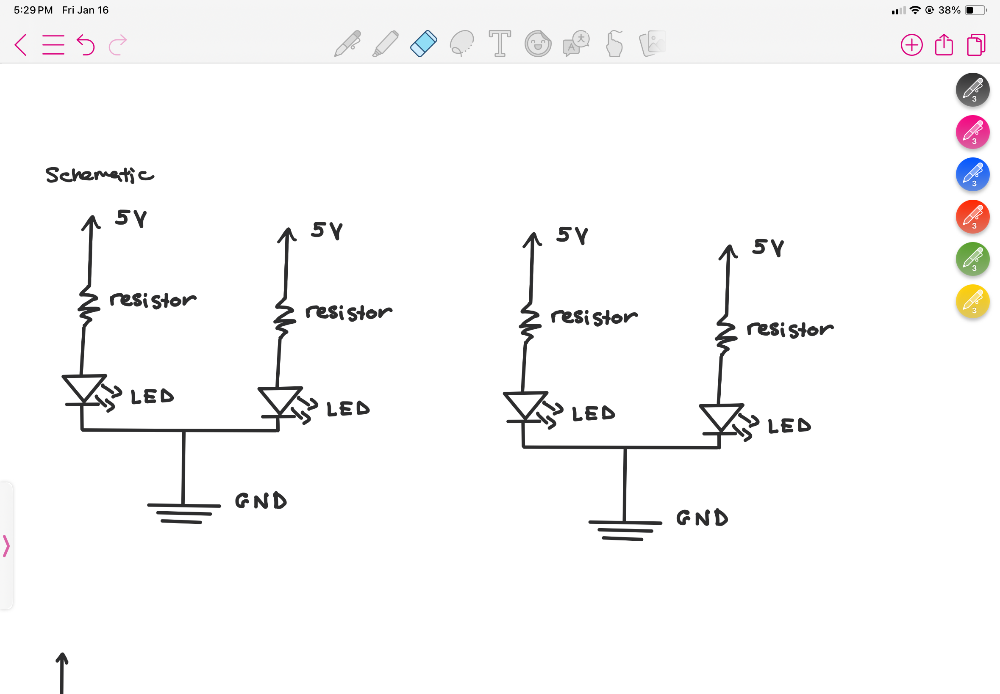
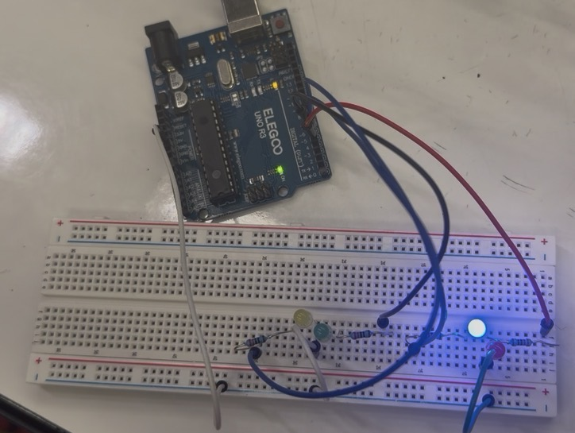
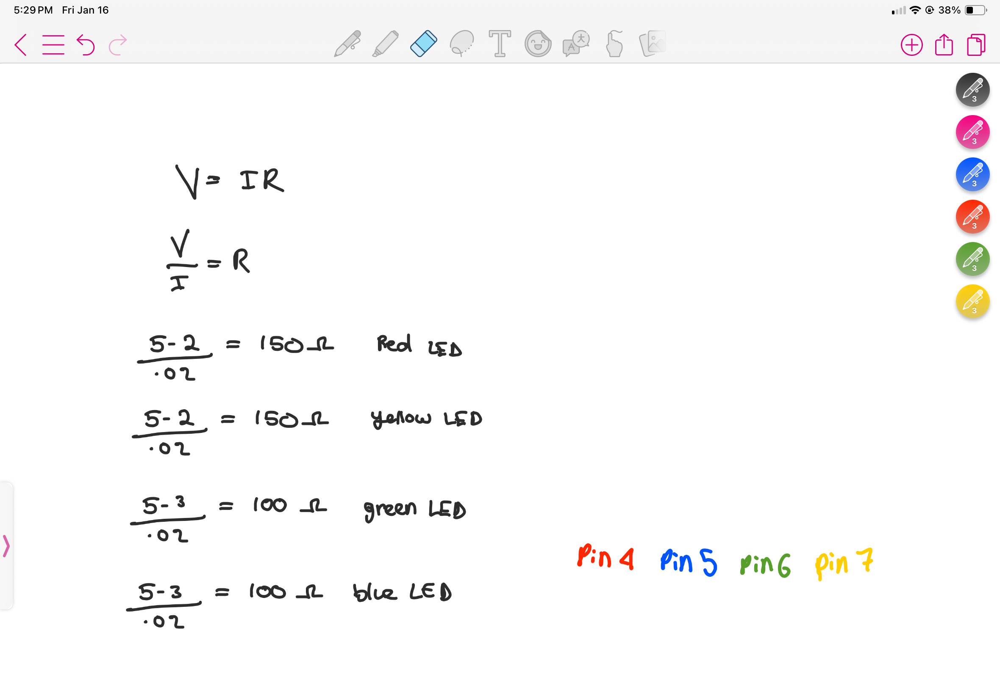

I chose to draws the schematics like this because I used 4 pins for each LED, 2 resistors, and 2 pins that connect to GRND.
Circuit:

I arranged my LEDS like this to keep my breadboard organized and intuitive for when I program it.
Ohm's Law Calculations

I chose to use a 220 OHM resistor for each LED because after calculating Ohm's law for each LED, 220 was the safest and most reasonable option.
Firmware:
/*
Valentina Filizola
Blink! Assignment
HCDE 439
*/
// Timer used for length that each pin would be on for
int timer = 100;
// Initializes each pin
void setup() {
// Use a for loop to initialize each pin as an output:
for (int thisPin = 4; thisPin < 8; thisPin++) {
// Tells Arduino how each pin will behave
pinMode(thisPin, OUTPUT);
}
}
// Initializes each pin's action
void loop() {
// Nested for loop: outer loop acts as a counter for the number of times the pattern will be repeated (9 times)
for (int count = 0 ; count < 9; count ++) {
// Inner for loop indicates that pin 4 and 5 (red and blue LED's) will blink
for (int thisPin = 4; thisPin <= 5 ; thisPin++) {
// Turns the pin on:
digitalWrite(thisPin, HIGH);
// Time that pin is on for
delay(timer);
// Turn the pin off:
digitalWrite(thisPin, LOW);
}
}
// Nested for loop: outer loop acts as a counter, loops through 9 times
for (int count = 0 ; count < 9; count ++) {
// Inner for loop indicates that pin 6 and 7 (green and yellow LED's) will blink
for (int thisPin = 6; thisPin <= 7 ; thisPin++) {
// Turns the pin on:
digitalWrite(thisPin, HIGH);
// Time that pin is on for
delay(timer);
// Turn the pin off:
digitalWrite(thisPin, LOW);
}
}
//Array that initializes evenPins, representing the even pins(red and green LED's)
int evenPins[] = {4, 6};
// Nested for loop: outer loop acts as a counter, loops through 9 times
for (int count = 0; count < 9; count++) {
// Inner for loop loops through the array
for (int i = 0; i < 2; i++) {
// Turns the pin on:
digitalWrite(evenPins[i], HIGH);
// Time that pin is on for
delay(timer);
// Turn the pin off:
digitalWrite(evenPins[i], LOW);
}
}
//Array that initializes oddPins, representing the odd pins(blue and yellow LED's)
int oddPins[] = {5, 7};
// Nested for loop: outer loop acts as a counter, loops through 9 times
for (int count = 0; count < 9; count++) {
// Inner for loop loops through the array
for (int i = 0; i < 2; i++) {
// Turns the pin on:
digitalWrite(oddPins[i], HIGH);
// Time that pin is on for
delay(timer);
// Turn the pin off:
digitalWrite(oddPins[i], LOW);
}
}
// Nested for loop: outer loop acts as a counter, loops through 3 times
for (int count = 0; count < 3; count++) {
// innerloop loops from the highest pin to the lowest:
for (int thisPin = 7; thisPin >= 4; thisPin--) {
// turn the pin on:
digitalWrite(thisPin, HIGH);
// Time that pin is on for
delay(timer);
// Turn the pin off:
digitalWrite(thisPin, LOW);
}
// Other innerloop loops from the lowest pin to the highest:
for (int thisPin = 4; thisPin <= 7; thisPin++) {
// turn the pin on:
digitalWrite(thisPin, HIGH);
// Time that pin is on for
delay(timer);
// turn the pin off:
digitalWrite(thisPin, LOW);
}
}
}
Circuit's Operation